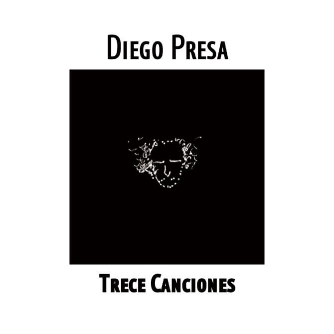

DISCOGRAFÍA
SOLISTA
Diego Presa. Editado por Bizarro Records, 2012.

Trece canciones. Producido por Alejandro Ferradás y editado por Bizarro Records, 2014.

Playa desierta. Producido por Federico Lima y editado por Bizarro Records, 2016.

Cuarto. Producido por Fabrizio Rossi y editado por Bizarro Records, 2020.

Visitante. Producido por Juan Ravioli y editado por Bizarro Records, 2022.
BUCEO INVISIBLE

Música para niños tristes. Editado por Perro andaluz, 2006.
Cierro los ojos y todo respira. Editado por Bizarro Records, 2009.
Disfraces para el frío. Editado por Bizarro Records, 2011.
El pan de los locos. Buceo Invisible. Editado por Bizarro Records, 2015.

Luz marginal. Editado por Bizarro Records, 2018
EL ASTILLERO

Sesiones. Editado por Bizarro Records, 2016.
Cruzar la noche. Editado por Bizarro Records, 2018.
DÚO DIEGO PRESA Y JULIETA DÍAZ